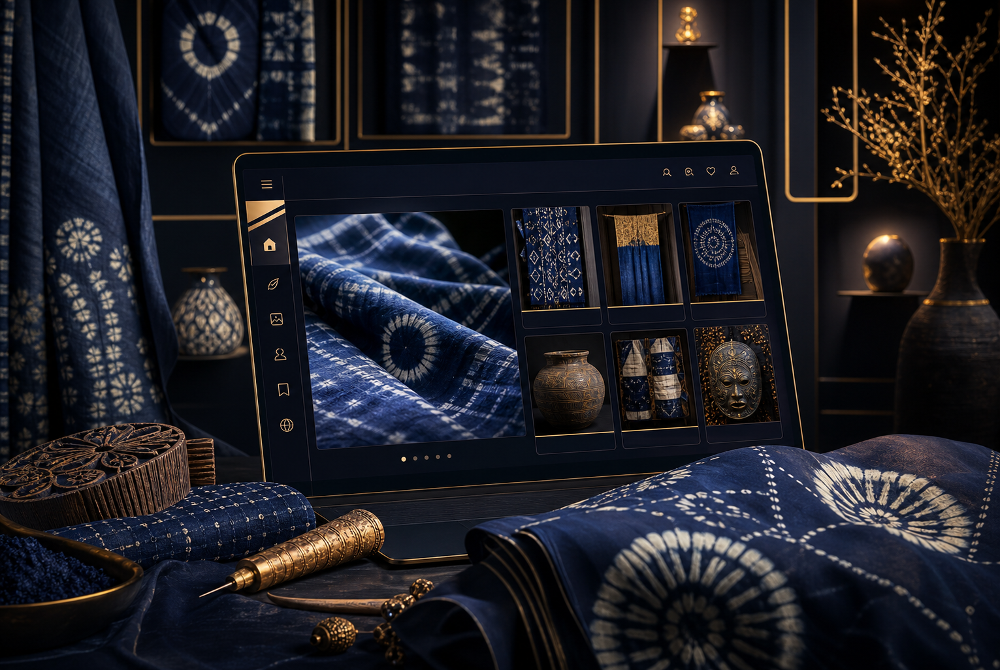
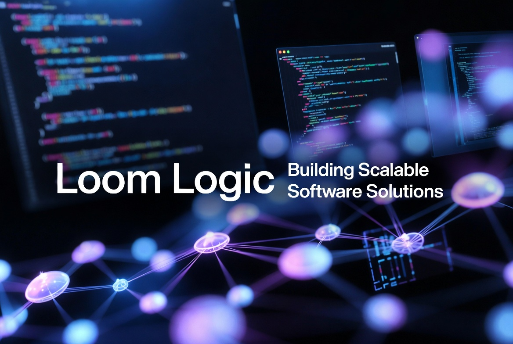
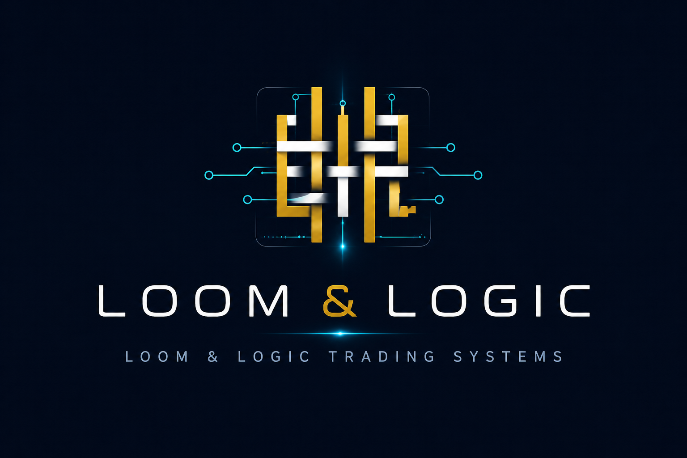
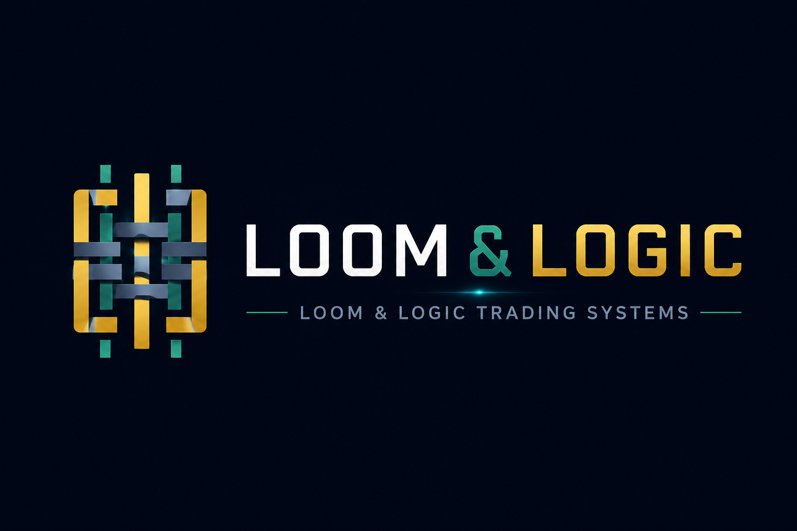

Creative PlatformIndigoArtHub
A digital gallery for Osogbo Adire, Batik, Yoruba craftsmanship, artisans, and collectors. This creative platform is separate from the Web3 trading systems.

Loom Logic builds business websites, automation dashboards, creative platforms, and Web3 system tools with clear boundaries, careful workflows, and client-ready presentation.
The public website is separate from V2. Clients see a professional company presence, while internal trading and automation controls stay private.
Each Loom Logic system has its own purpose, audience, and risk boundary. That separation keeps client work understandable and keeps internal trading tools away from public-facing product promises.

Creative PlatformA digital gallery for Osogbo Adire, Batik, Yoruba craftsmanship, artisans, and collectors. This creative platform is separate from the Web3 trading systems.

Web3 Trading SystemThe earlier trading-system lane used for learning, monitoring, and operational history. It informs V2 without being mixed into public art-platform messaging.

Safety-First Control PlaneA newer Web3 trading-system lane focused on approval gates, read-only visibility, careful automation, and stronger operational controls.
Client-facing products, internal tools, and trading systems are treated as separate lanes.
Automation is designed around review, logging, and operator control before live actions.
Work is shaped around usable dashboards, workflows, and systems clients can understand.
Trading-system communication avoids profit promises, pressure, and misleading claims.
Use this site as the clean professional front door while V2 remains an internal control system. Reach out by email or follow the founder and business accounts on X.